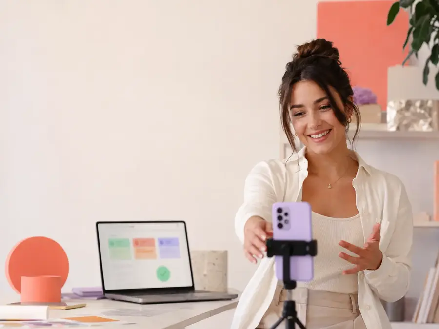

Страшно ошибиться
Непонятно, что и когда передавать, где размещать erid и какие данные потребуются после публикации.
ОРД · ERID · ОТЧЁТНОСТЬ
Вы передаёте рекламный материал и данные о размещении. Мы регистрируем креатив через ОРД, выдаём erid и отправляем обязательную отчётность.
Фото, видео, текстово-графические материалы и другие форматы

без лимитовпо количеству креативов
через ОРДработаем с партнёром Click.ru
eridпередаём до размещения
отчётностьпосле выхода рекламы
БЕЗ ТАБЛИЦ И ЛИЧНЫХ КАБИНЕТОВ ОРД
До размещения нужен идентификатор, а после — корректные данные о показах и участниках цепочки.
Непонятно, что и когда передавать, где размещать erid и какие данные потребуются после публикации.
Договоры, площадки, макеты, статистика и сроки приходится контролировать вручную.
После запуска легко забыть вернуться к размещению и передать фактическую статистику.
КАК МЫ РАБОТАЕМ
Вы видите понятный результат каждого этапа.
Креатив, сведения о рекламодателе, договоре, площадке и планируемом размещении.
Передаём необходимые сведения через партнёрский сервис Click.ru.
Вы получаете токен и размещаете его в рекламном материале предусмотренным способом.
После размещения вы сообщаете период, площадку и статистику показов.
Передаём сведения через ОРД для последующего учёта в ЕРИР.
ВЫ СОЗДАЁТЕ — МЫ ОФОРМЛЯЕМ
Подготовьте контент и план размещения. Мы проведём его по техническому процессу и напомним, какие данные нужны после публикации.
ГРАНИЦЫ УСЛУГИ
Так процесс запуска не останавливается из-за неверных ожиданий.
Сведения об интернет-рекламе направляются в ЕРИР через операторов рекламных данных. Официальные материалы: учёт интернет-рекламы, Единый реестр интернет-рекламы. Определение того, относится ли конкретная информация к рекламе, находится в компетенции ФАС; при спорной ситуации рекомендуется получить отдельную юридическую консультацию.
ФИКСИРОВАННЫЙ ТАРИФ
Одна ежемесячная стоимость без доплаты за каждый новый баннер, видео или текстово-графический материал.
4 500 ₽в месяц
БЕЗ ОГРАНИЧЕНИЙ ПО КРЕАТИВАМДля работы потребуются достоверные данные о заказчике, договоре, площадке, периоде и статистике размещения.
ВОПРОСЫ
Нет. Регистрация и передача сведений выполняются через ОРД с использованием партнёрского сервиса Click.ru.
В рамках тарифа SeeU количественного ограничения нет.
Нет. Мы выполняем технический процесс маркировки переданных рекламных материалов. В спорной ситуации вопрос следует уточнять с юристом или учитывать разъяснения ФАС.
Мы передаём полученный идентификатор и подсказываем, на каком этапе он нужен. Финальное размещение креатива и erid выполняет владелец рекламного материала или площадка.
Период и площадка размещения, фактическая статистика и иные сведения, которые запросит ОРД для конкретного сценария.
На этом этапе отдельная подготовка юридических документов в услугу не входит.